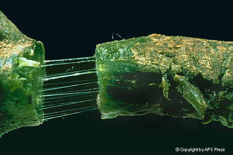

---------- " Come On Now, Lest do It Together. " ----------
---------- " Lets Start to Diagnose Your Plant " ----------

BACTERIA
Bacteria are microscopic prokaryotic (a cell in which the nuclear material is not enclosed by a nuclear membrane) and, for the most part, single-celled microorganisms.